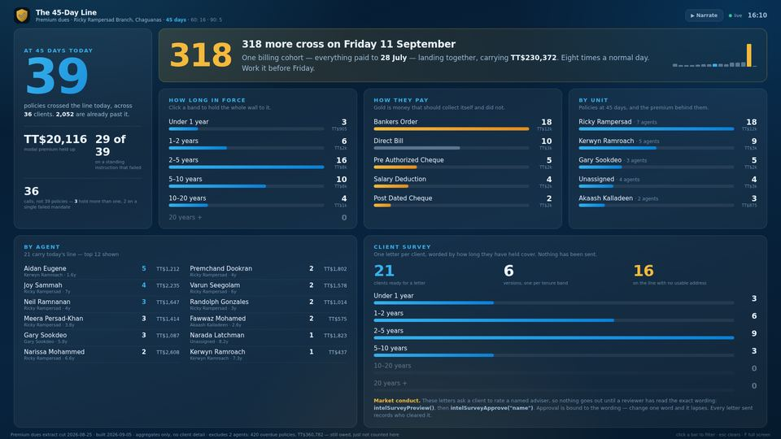
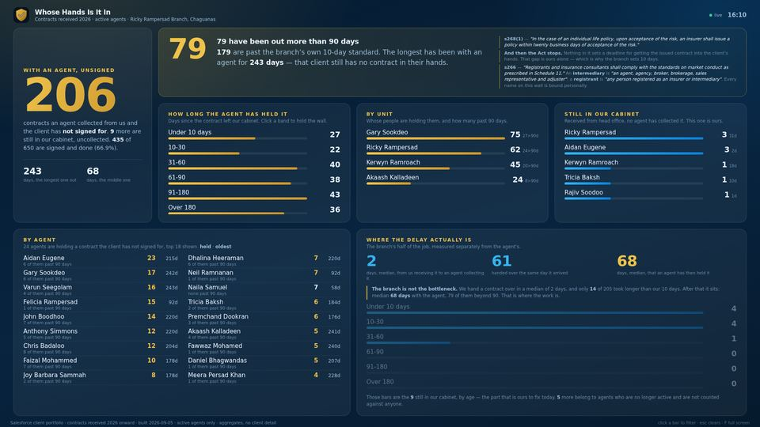
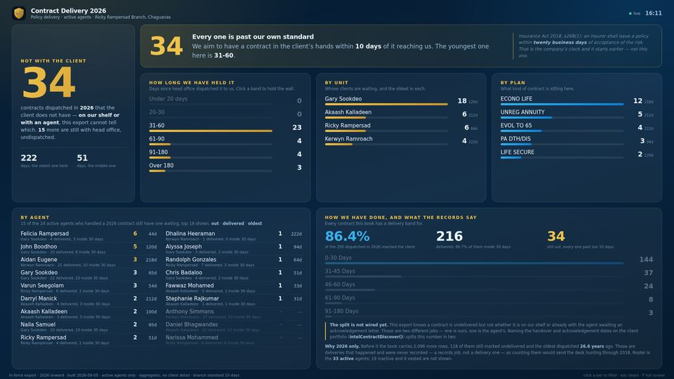
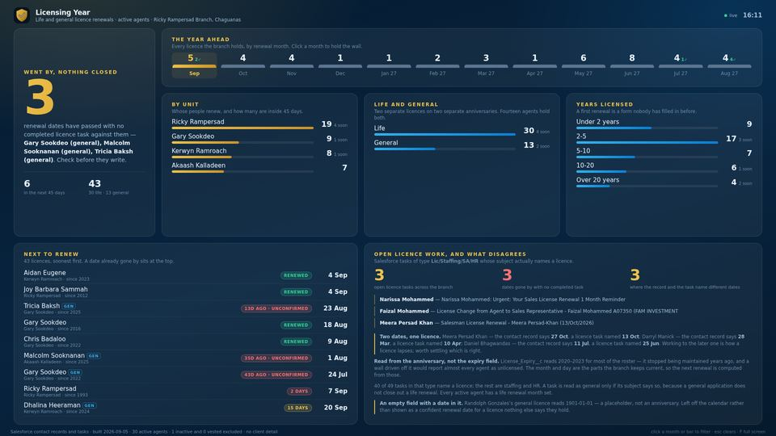
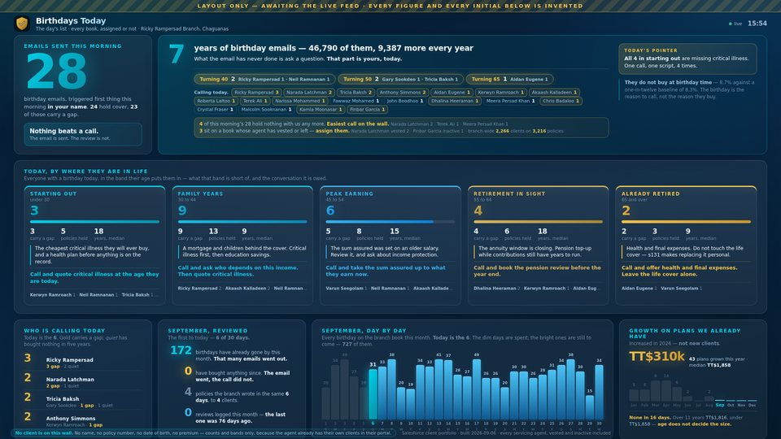

The reports we built every Friday,
now live twenty four seven.
Premium dues. Contracts. Licences. The same three questions every week, built by hand and out of date by Monday morning. They are a wall now.
Press space to pause, R to replay · sound plays when you start it · Or watch the full three-minute walkthrough →
Same numbers. Different week.
Nothing on these walls is new information. What is new is that nobody has to assemble it, and it does not go stale between Friday and Monday.
A Friday report
- Built by hand, one screen at a time
- Accurate for about an afternoon
- Seen by whoever was copied on the e-mail
- No way to ask it a follow-up question
- Nothing recorded what was done about it
A wall on the branch floor
- Rebuilt nightly, straight from the source systems
- Current every hour of every day
- Visible to everyone who walks past it
- Click any bar and the whole wall holds to it
- Every letter sent records who cleared it
What is on the board.
Every screen shows aggregates and our own staff — counts, money, bands, agents and units. No client name, contact or policy number reaches any of them, because a wall in a branch is read by whoever walks past it.
{kind=link}

Premium dues
Who crossed the line today, how long they have held cover, how they pay, and whose they are. At 60 the letter remembers what they told us at 45. At 90 we stop asking them to rate us and start offering ways to keep the cover.
Open the wall →{kind=link}

Contracts we hold
Three states, kept apart: still in our cabinet with no agent having collected it, with an agent and the client has not signed for it, and acknowledged. Every one carries a name and a number of days.
Open the wall →{kind=link}

How quickly it gets there
Contracts dispatched this year, what reached the client and what has not — against the branch's own ten-day promise, measured separately from the statutory clock so neither is mistaken for the other.
Open the wall →{kind=link}

The licence year
Every licence the branch holds, by renewal month — both kinds, because an agent may carry a life licence and a general one on separate anniversaries. A renewal that passed with nothing closed against it sits at the top.
Open the wall →{kind=link}

Birthdays today
The one wall here that is not about something going wrong, and the only one that is a day's work rather than a year's position. Whose birthday it is today, grouped into five life stages, with what each stage is short of and the conversation it is owed — and every agent named on it, so the person who should pick up the phone can find themselves from across the room. The birthday letter has gone out automatically for seven years — 46,790 of them — and what it has never done is ask a question. It reviews the month behind it, carries the 2,266 clients whose servicing agent has vested or left, and measures what a call is actually worth: 43 existing plans grown this year for TT$310,184, where the age of the plan turns out not to decide the size of the increase. No client reaches this wall — counts and bands, like the other four. The picture is the layout, not a reading — the figures in it are placeholders until the Salesforce feed is connected.
Open the wall →Why the contract walls quote the Act.
Because the honest reading is sharper than the one people assume, and it puts the duty in the right place.
“In the case of an individual life policy, upon acceptance of the risk, an insurer shall issue a policy within twenty business days of acceptance of the risk.”
That is the insurer's clock, it starts at acceptance of the risk, and it governs issuing — not delivering. Read the Act right through and there is no deadline anywhere on getting the issued contract into the client's hands. So that clock is ours, and the branch sets it at ten days.
“An insurer shall not forfeit a policy for non-payment … until a notice has been sent … and twenty business days have elapsed.”
s180 gives a client who has stopped paying a late payment notice and twenty business days to use it, and s177 makes the accumulated value already theirs after three years of premiums. That is why forty five days is a phone call and ninety days is an offer to keep the cover — not a lapse letter.
“No person shall perform the functions of a sales representative during any period in which he is not registered.”
s117(2)(a) caps a certificate of registration at three years; s119(1) is the one people are caught by — renewal is refused without continuing professional development, so a licence does not roll over on its own. And there are two of them: a life registration and a general one, on two separate anniversaries. That is the whole reason the licence wall exists.
Is this real data?
Yes. Every figure in the film and in the stills below is this branch's own, read out of Salesforce and the branch workbook. Nothing is invented and no figure is a placeholder.
The film is a photograph
The stills were captured on 5 September 2026 and they do not move. The numbers in them were true that afternoon and are already out of date — which is the point the film is making.
The wall is live
The four screens re-read their source and repaint on the floor. What you see on the wall on a Tuesday is Tuesday's position, not a report somebody built on Friday.
It is internal
Agent names and branch totals are on these screens. This page is for the branch and for Guardian — it is not advertising, and it carries no client name, policy number or premium.
Three things worth knowing.
Aggregates only
The walls are unauthenticated by design — a screen on a wall has nobody to sign it in. In exchange they receive counts and bands, never client rows. The birthday wall briefly carried two initials per client and does not any more: an agent already has these clients in their own portal, so the wall does not need to identify anybody — it needs to say which conversation to have.
Nightly, from source
A trigger reads every extract once, computes all of it, and caches the result. Nothing is typed in, so nothing can be typed in wrong.
It says what it cannot see
Where a figure is missing, stale or disputed, the wall says so on screen rather than showing a confident number nobody should trust.